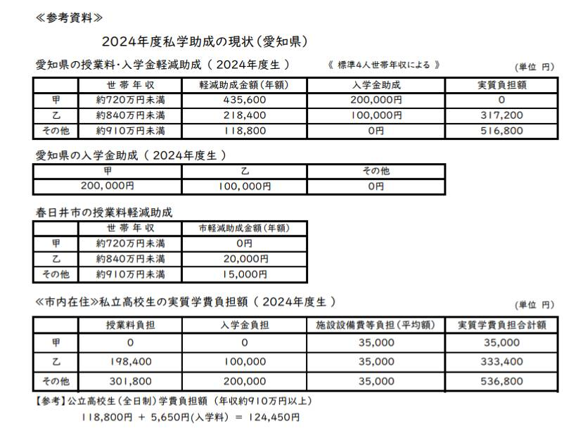
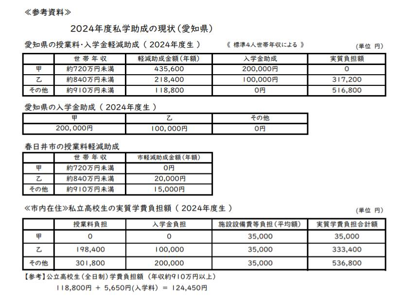

であい ふれあい ハーモニー2024
開催日：２０２４年１１月１７日(日)
時 間：１２時～１６時
場 所：春日井市総合福祉センター
春日井市浅山町１丁目２−６１
地図
主 催：私学をよくする愛知父母懇談会
※入場無料 気軽にご参加いただけます！ぜひお越しください
私学をよくする愛知父母懇談会とは
12:00～13:30 15:00～16:00
私学進学相談会
＊学園別懇談をご希望の場合は、希望学園を
申込フォーム①から１１月１１日（月）までに
申し込んでください。
12:00～16:00 私学合同作品展
＊主に写真部作品
（東海中高、淑徳中高、南山高中男子部）
13:30 聖霊中高聖歌隊
聖霊中高オーケストラ部（アンサンブル）
13:45 希望プロジェクト
（高校生フェスティバル）
弁論と群舞・合唱
※合唱曲： 「全力少年」
（スキマスイッチ楽曲）
＊当日一緒に歌える方募集中
申込フォーム②から１１月１１日（月）までに
申し込んでください。（詳細は下記を参照）
14:00～15：00 記念式典 基調報告、来賓挨拶
県議会議員の皆様や春日井市長などをお招きして
「私学も無償化」が必要な事情にご理解をいただく
ようお願いする貴重な機会となります。
- 基調報告（「私学の今を語る」）
- 来賓ご挨拶
- 集会宣言
- 祈りの合唱（聖霊中高聖歌隊）
合唱参加の応募者の方へお知らせ
１） 春日井オータムフェスに参加して
いただいた方には粗品を進呈します。
２） 当日「粗品引換券」を午後 12 時から 受付にて配付します。
３） 粗品は記念式典終了後、粗品引換券 と交換で、受付にてお渡しします。
４） 当日までに練習を兼ねてご参加いただける オータムフェスティバルが近隣であります。
10/27(日)瀬戸会場（聖霊中高体育館）
11/ 3(日)名北会場（名古屋造形大学）
守山会場（志段味地区会館）
*その他最寄りの会場については、統一
チラシ（愛知父母懇 HP）でご確認を。
＊どの会場も式典時間に間に合うように
ご参加ください。
申込フォーム①学園別懇談(締切 11月11日）
申込フォーム②
合唱参加応募(締切 11月11日）
学園のパンフレットを多数ご用意しております
お気軽にお越しください


 
